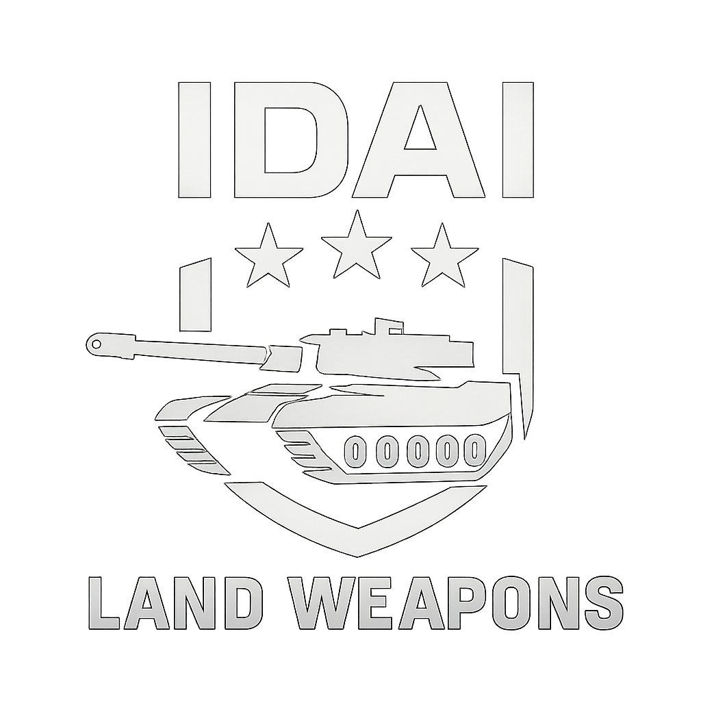
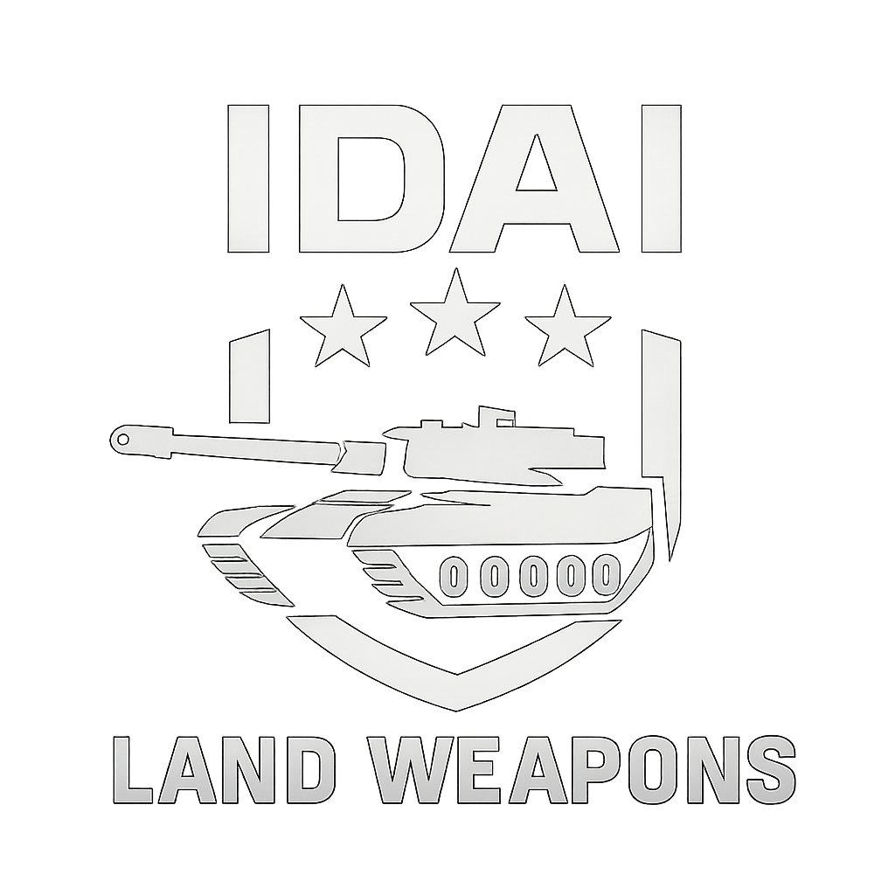
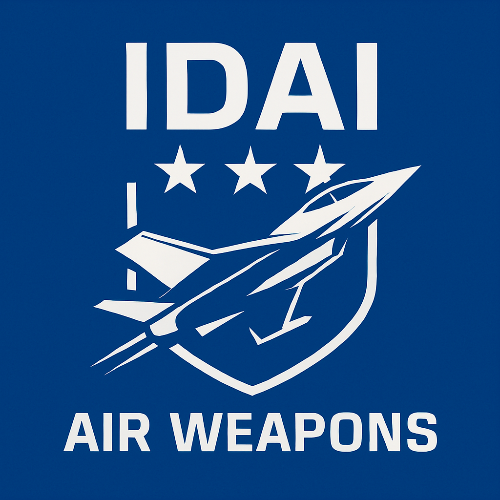
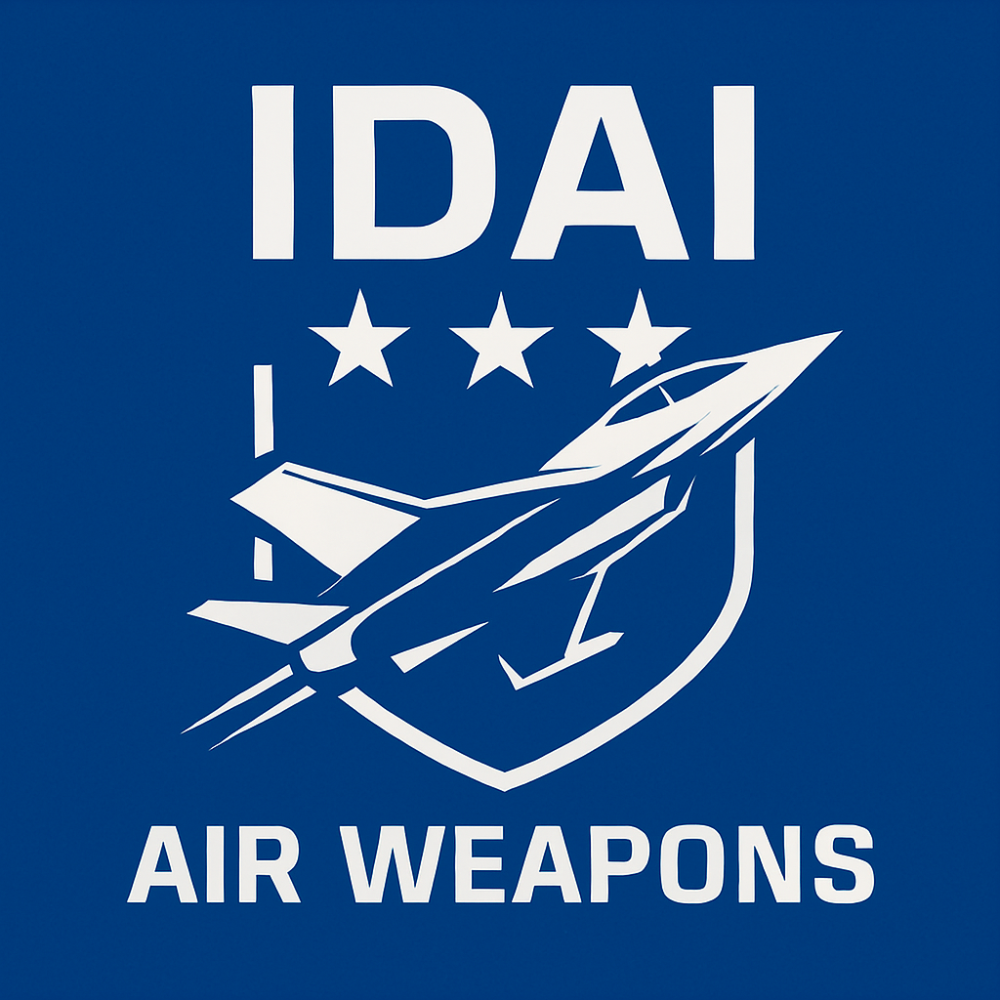
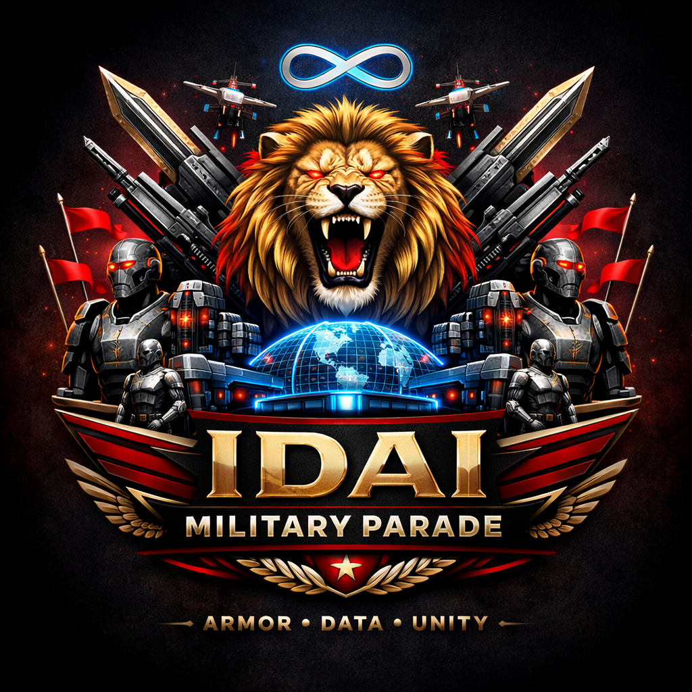
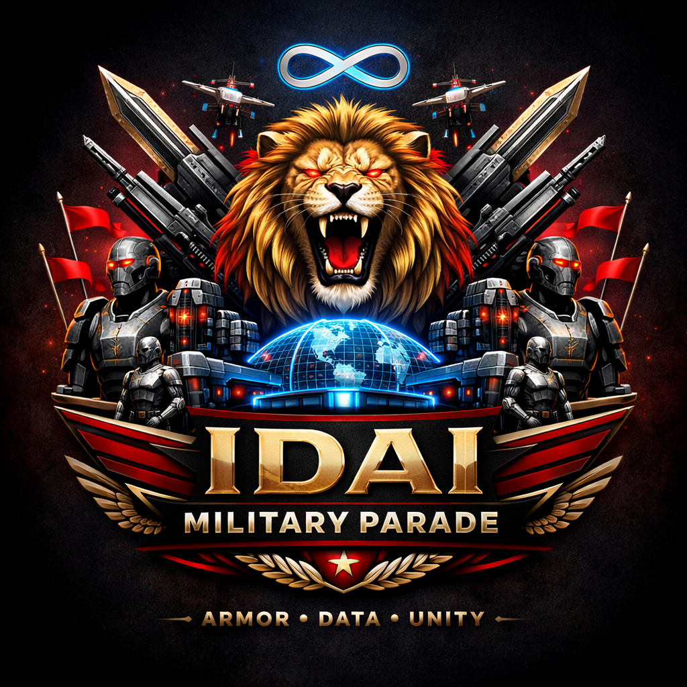

Motto:
The IDAI Weapon Sector stands as a visionary force in futuristic defense architecture, integrating advanced technologies across land, air, sea, and strategic domains. Each division is meticulously crafted to symbolize power, precision, and AI-driven intelligence, forming a unified arsenal under the IDAI banner.
On the ground, the Iron Legion commands dominance with main battle tanks, IFVs, APCs, artillery, MLRS, and air defense systems. These units represent resilience and tactical strength, engineered for both offensive and defensive operations in complex terrains. Their integration of smart targeting and adaptive armor systems reflects IDAI’s commitment to next-generation warfare.
In the skies, the IDAI Sky Dominion, Sky Phantoms, and Phantom Swarm lead aerial supremacy. From hypersonic jets and stealth helicopters to autonomous drones, these forces embody speed, stealth, and strategic reach. The Iron Sky Legion, a specialized aircraft division, serves as the elite spearhead, blending ceremonial symbolism with unmatched capability.
Naval and strategic systems complete the sector’s reach, with aircraft carriers, submarines, destroyers, and advanced technologies like nuclear triads, hypersonic missiles, and electronic warfare. Together, the IDAI Weapon Sector forms a multidimensional shield and sword — a fusion of wisdom, might, and futuristic vision.
 

The Land Force Weapons of the IDAI Weapon Sector, ceremonially known as the Iron Legion, stand as the embodiment of resilience and armored supremacy. This division integrates heavy tanks, missile systems, artillery, and anti-air vehicles into a unified ground arsenal. Each platform is designed not only for battlefield dominance but also for symbolic permanence, representing the unyielding strength of iron and the relentless march of progress. Complementing the Iron Legion are the Crimson Barrage Assembly and Inferno Lance Corps, divisions that emphasize overwhelming firepower and precision missile deterrence, while the Aerial Dominion Guard secures the skies above the battlefield.
At the core of IDAI’s land force lies its AI-driven coordination systems, which transform ground warfare into a synchronized network of predictive maneuvers. Tanks recalibrate their armor responses in real time, artillery adapts its bombardment patterns to terrain, and missile systems adjust trajectories with anticipatory intelligence. This fusion of machine learning and tactical doctrine ensures that every strike is calculated, every defense is adaptive, and every movement is part of a larger orchestration of supremacy. The result is a land force that evolves continuously, outpacing threats with foresight and precision.
Ceremonially, the Land Force Weapons embody endurance, dominion, and loyalty. Their insignias — tanks advancing with banners, artillery roaring in crimson arcs, and missiles ascending toward the horizon — symbolize both the guardianship of territory and the unity of warriors under the IDAI banner. Rituals of deployment and ceremonial affirmations transform battles into acts of honor, binding soldiers to a shared legacy of courage and innovation. Each battalion carries its own emblem and motto, reinforcing identity and pride within the greater force.
In the grand vision of IDAI, the Iron Legion and its allied divisions are the pillars of destiny. They secure borders, project deterrence across continents, and ensure that IDAI’s influence is unshakable on land. More than a force, they are a legacy of wisdom and might — a fleet of guardians marching not only with firepower, but with purpose, destined to be remembered as the eternal rulers of the earth.
The IDAI Navy Force is a multidimensional maritime power designed to dominate every aspect of naval warfare. Its doctrine unites carriers, submarines, destroyers, artillery platforms, and autonomous drones into a single shield of supremacy. Each division bears the Roaring Lion emblem, symbolizing courage, honor, and eternal sovereignty across the seas.
At the surface, the Oceanic Dominion Fleet commands with colossal aircraft carriers and battleships. These floating fortresses, such as the Sky Fortress and Solaris Dominion, project unmatched aerial supremacy and resilience. Beneath the waves, the Abyssal Spearhead operates as unseen predators, deploying advanced submarines like the Abyssal Harbinger and Shadow Leviathan to strike silently and decisively.
The Tidal Storm Assembly ensures rapid disruption with destroyers and frigates, cutting through contested waters with speed and layered firepower. Meanwhile, the Crimson Wave Corps embodies overwhelming destruction, unleashing storms of missiles and artillery fire to reshape horizons. Finally, the Phantom Tide Squadron represents the future of naval combat, deploying autonomous drones and unmanned vessels that operate as spectral hunters, unpredictable and lethal.
Together, these divisions form not just a navy but a living monument of maritime supremacy. The IDAI Navy Force is celebrated as the guardian of oceans, ensuring deterrence, dominance, and the eternal roar of sovereignty across every tide.
 

The Air Force Weapons of the IDAI Weapon Sector, ceremonially known as the Sky Dominion, stand as the vanguard of aerial supremacy. This division embodies speed, stealth, and precision, integrating hypersonic jets, stealth helicopters, and autonomous drone swarms into a unified aerial arsenal. Each platform is engineered not only for combat effectiveness but also for psychological dominance, striking fear and awe before a single missile is launched. The Sky Dominion is complemented by the Sky Phantoms and Phantom Swarm, specialized divisions that emphasize stealth infiltration and autonomous coordination, while the Iron Sky Legion serves as the elite spearhead of ceremonial and strategic aerial might.
At the core of IDAI’s air force lies its AI-powered command and control systems, which transform aerial combat into a synchronized network of predictive intelligence. Jets adapt their flight paths in real time, drones learn from battlefield conditions, and helicopters integrate seamlessly with ground and naval forces. This fusion of machine learning and tactical doctrine ensures that every maneuver is anticipatory, every strike is precise, and every defense is adaptive. The result is an air force that does not simply react to threats but evolves continuously to outpace them.
Ceremonially, the Air Force Weapons embody freedom, reach, and supremacy. Their insignias — jets soaring upward, drones encircling in formation, and stars of command above — symbolize both dominance of the skies and unity under the IDAI banner. Rituals of deployment and aerial affirmations reinforce loyalty among pilots and crews, transforming missions into celebrated acts of honor and pride. Each squadron carries its own emblem and motto, binding aviators to a shared legacy of courage and innovation.
In the grand vision of IDAI, the Sky Dominion and its allied divisions are the wings of destiny. They secure airspace, project deterrence across continents, and ensure that IDAI’s influence reaches beyond horizons. More than a force, they are a legacy of wisdom and might — a fleet of guardians soaring not only with firepower, but with purpose, destined to be remembered as the eternal rulers of the skies.
 
